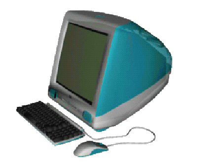
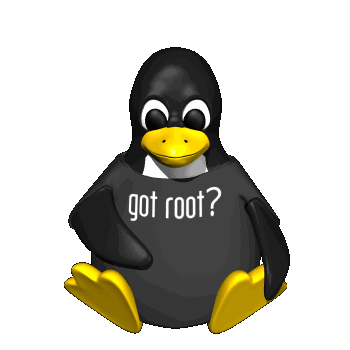
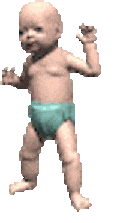
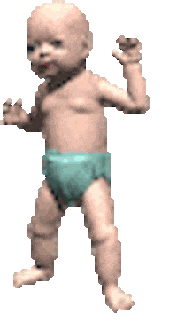
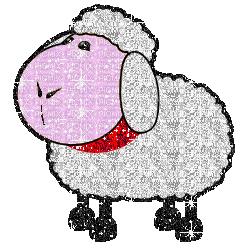

/ Hi, I'm Autumn! /
..and welcome to my lair ode to y2k personal pages.


Autumn Denny
Graduate Research Assistant
I am a Master’s student in Agricultural and Biological Engineering at Purdue University; I also completed my undergraduate studies here, earning a BSc in Biological Engineering in 2024. Since early 2022, I have been working with Dr. Raturi at Purdue's Agricultural Informatics Lab (axilab). My research focuses on human-data interaction and knowledge representation.
Beyond academics, I enjoy painting, reading, and spending time with my two pet rats... I also tutor with TutoringChicago!
 

The Plant Data Service
- Since Summer 2022 I have been involved with development of the Plant Data Service: an open-source, open-access plant data API for powering decision support tools.
- You can check out the early documentation here.

Digital Agriculture Club
- I have been involved with the Digital Agriculture Club since 2022. Together, we work on fun projects ranging from robotics, to IoT, to webdesign.
- I briefly served as president and am currently vice-president of the student organization.
- If you're interested in learning more, check out our lovely site here.
Agricultural Ontologies
- Recently, I have been more broadly studying ontologies and their use in agriculture. Many ontologies exist, but only a couple have seen widespread use. Why's that? Here's an short summary by an Enrico Franconi (2008).
- The primary ontologies I am interested in are AgrO, CropOnt, ENVO, FoodOntology, GeneOn, and PO.
- How do we make human domain knowledge machine-understandable?
- How do we, as puny mortals, even make such complex data structures?
- Ontologies aside, what other standards exist to promote FAIR principles in agricultural data?